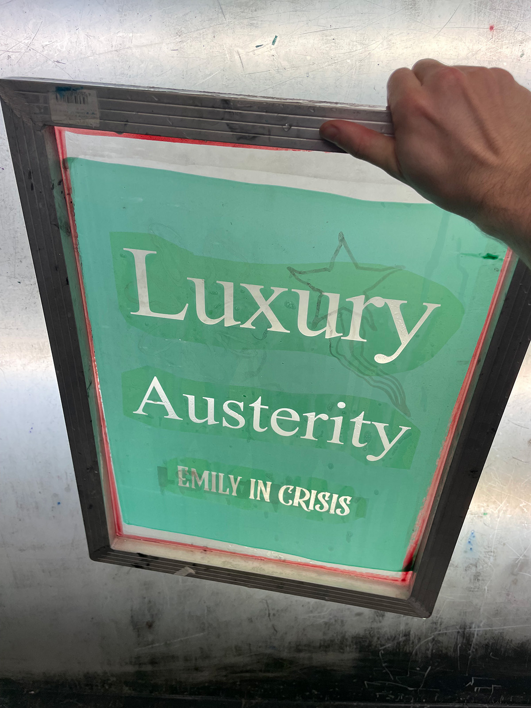
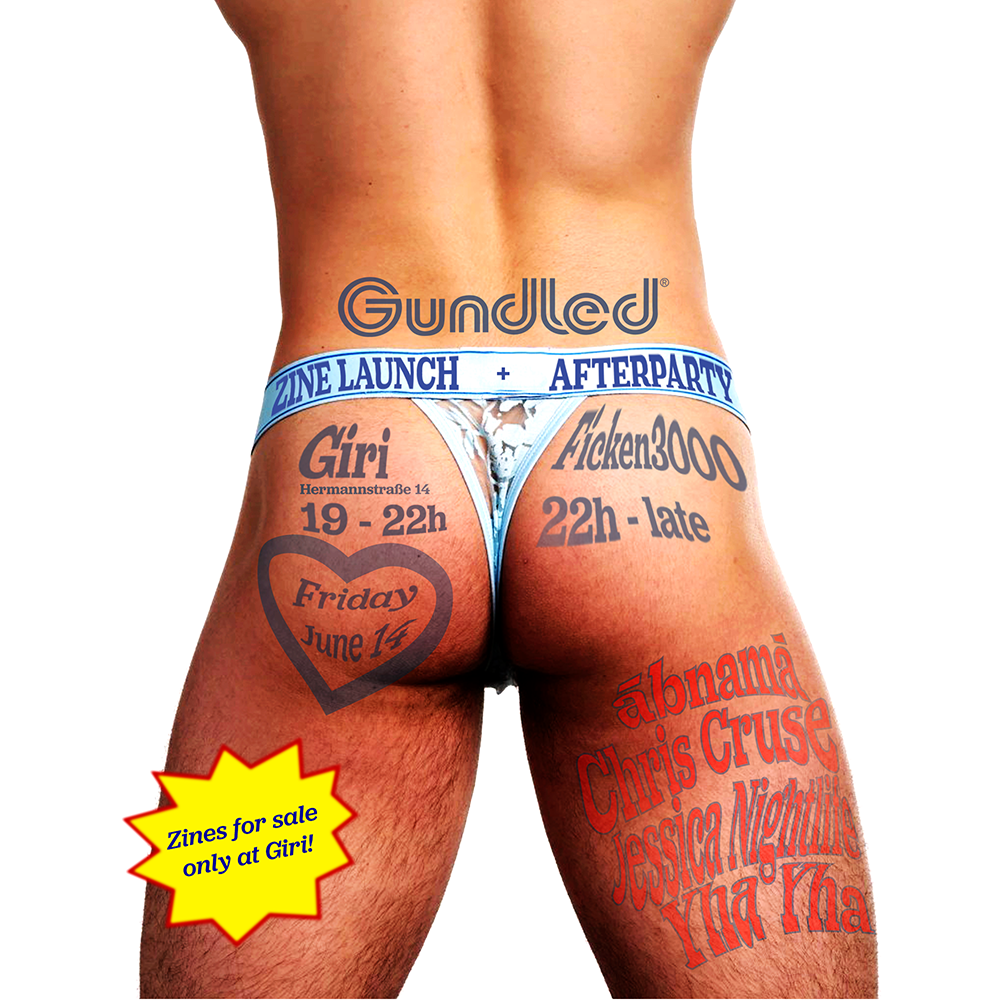
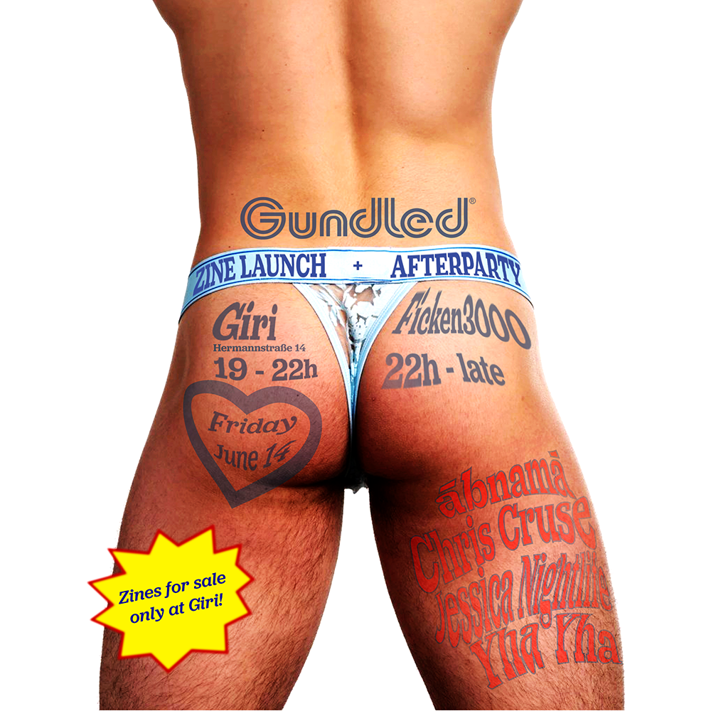

Gundled 2.0
released December 6, 2024
40 pages, inkjet print, edition of 250
contributors:
Tomi Haxhi
Eddie Baker
Colin Murphy
back page classified ads:
Anaury, Ashkan, Bebe, Ben, Blair, Brian, Caleb, Chris, Danna, Eric,
Farah, Jacob, Josh, Juliet, Kari, Kira, Matt, Moritz, Noa, Patrick,
Sebastjan, Silas, Syd, Valerio, Virgil, Yaki, and Zack
editors:
Eddie Baker
Colin Murphy
design:
Colin Murphy
For this publication, we imagined SkyMall for tweakers, and produced a slew of nonsensical trinkets, treasures and merch to accompany the zine, including handmade pipette bottle snowglobes, a custom santal 33-mmc scent (thank you to our cat piss and cathinone inspired perfumer, Felipe Urrita), silicon bracelets memorializing invented gay tragedies, and much more.
currently available at printed matter





 Gundled 1.0
Gundled 1.0


 
